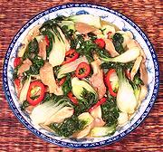

|
Choy with Shrooms & Bean SauceThailand | ||||
| Makes: Effort: Sched: DoAhead: |
4 side ** 20 min Prep |
This recipe makes a tasty side of greens or a light vegetarian main dish for two. I often make it when I'm tired of meat. Most varieties of choy will work For a similar recipe with pork, see Pork with Choy & Mushrooms. | |||
|
|
14 4 4 3 2 1/4 2 3 |
oz oz cl T c T T |
Choy (1) Mushroom (2) Garlic Red Chili fresh (3) Oil Stock (4) Yellow Bean Sauce (5) Lime Juice fresh |
Prep - (15 min)
|